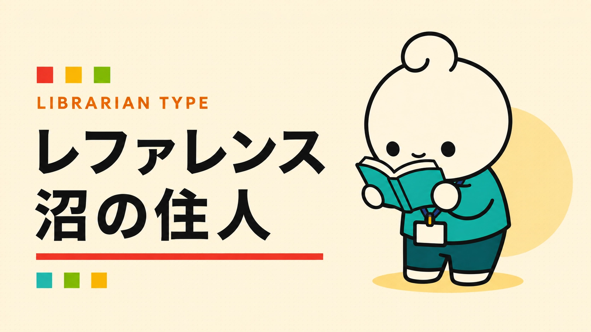

あなたの図書館員タイプは……
レファレンス沼の住人

ひとつ調べると、三つ気になる。
一つの相談を調べ始めると、背景や関連情報まで気になってくるタイプ。気がつけば、最初の質問よりずっと深いところまで潜っています。
こんなこと、ちょっと好きかも
- 参考文献の参考文献までたどる
- 背景を知ってから本題に戻る
- 偶然見つけた周辺情報もメモする
※もちろん、だいたいです。
もう一度診断するYAWATOSHO GAMES / PICK 01
あなたにおすすめのYAWATOSHO GAME
GAME / 01
THE REFERENCE INTERVIEW GAME
ほんとの質問
利用者の言葉を手がかりに、対話を重ねて「ほんとの質問」を組み立てるレファレンス・インタビューゲーム。
ひとつ聞くと、もうひとつ気になるあなたへ。会話の奥にある“ほんとの質問”まで、気兼ねなく潜れます。
このゲームで遊ぶ